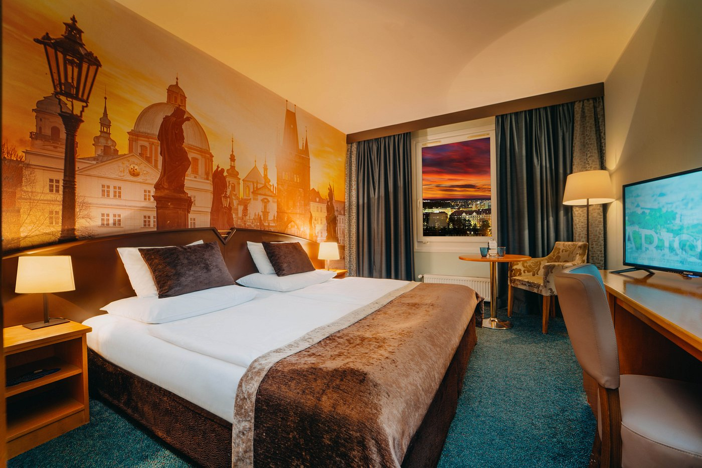
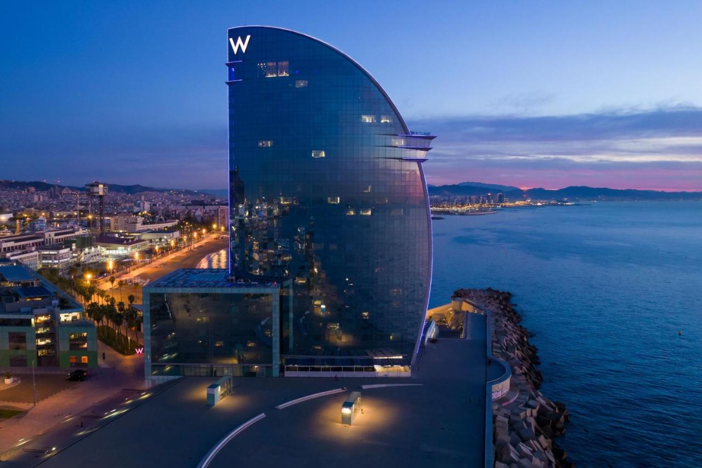
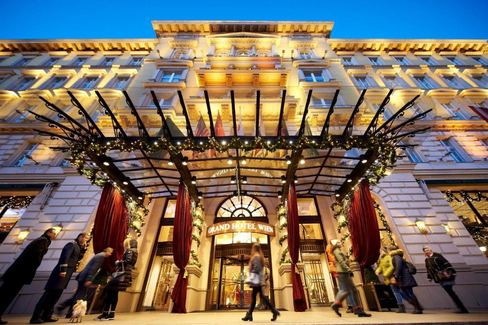

Bem-vindo a EuroTour
Plaza Praga Hotel: Luxo e Sofisticação no Coração de Praga
O Plaza Praga Hotel oferece uma experiência de luxo e sofisticação no coração da deslumbrante cidade de Praga. Com quartos elegantemente decorados e uma localização privilegiada, este hotel proporciona fácil acesso às principais atrações da cidade, incluindo a Ponte Carlos e o Castelo de Praga. Desfrute de uma culinária requintada no restaurante do hotel e relaxe com uma bebida no elegante bar enquanto aprecia vistas deslumbrantes da cidade. Com serviços exclusivos, como spa e academia, o Plaza Praga Hotel é a escolha ideal para viajantes a lazer e a negócios.
W Barcelona: O Ícone Moderno à Beira-Mar em Barcelona
Situado à beira do Mar Mediterrâneo, o W Barcelona é um ícone da modernidade e do luxo em Barcelona. Com quartos elegantes e vistas espetaculares, este hotel oferece uma experiência memorável. Desfrute de gastronomia excepcional nos restaurantes premiados e relaxe à beira da piscina infinita enquanto aprecia vistas panorâmicas da costa. Com acesso direto à praia e serviços de primeira classe, o W Barcelona é o destino preferido para viajantes sofisticados em busca de uma experiência excepcional.
Grand Hotel Wien: Elegância e História em Viena
O Grand Hotel Wien é um marco de elegância e história no coração de Viena. Com quartos espaçosos e restaurantes premiados, este hotel oferece uma estadia luxuosa e confortável. Desfrute de uma culinária requintada e relaxe com uma bebida no elegante bar do hotel. Com um spa de luxo e espaços para eventos, o Grand Hotel Wien é o destino ideal para viajantes exigentes em busca de uma experiência inesquecível em Viena.
